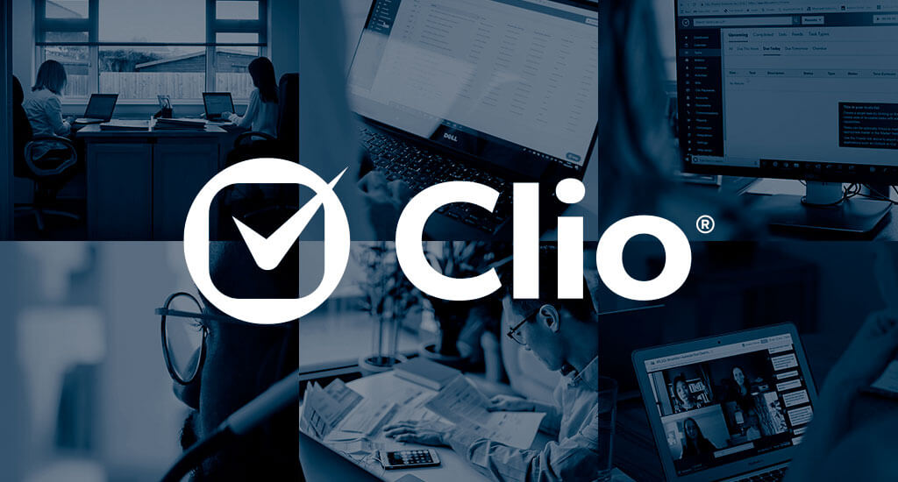
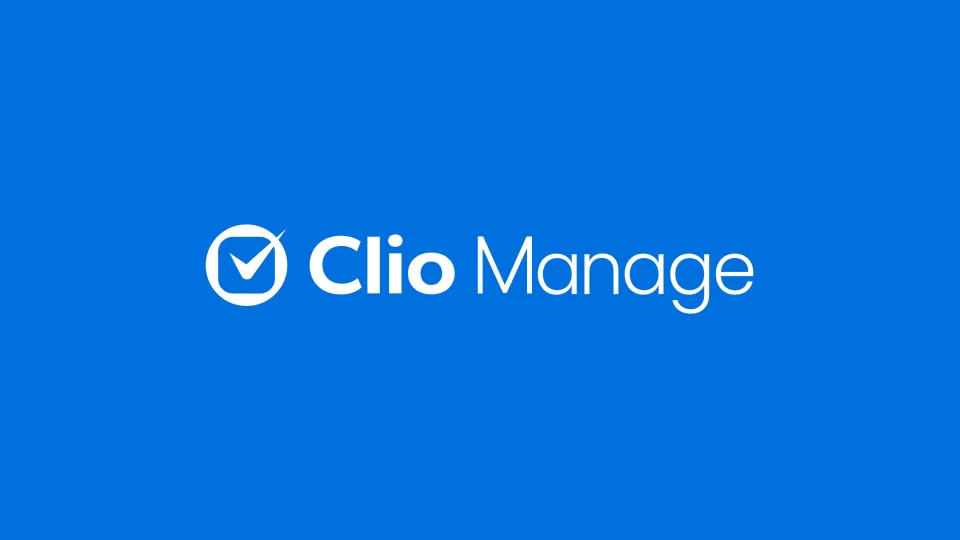
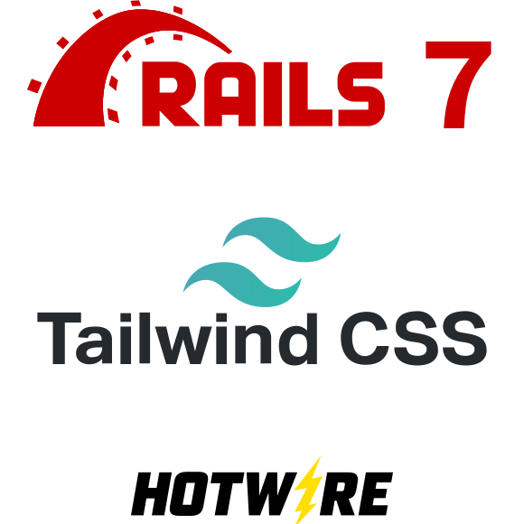
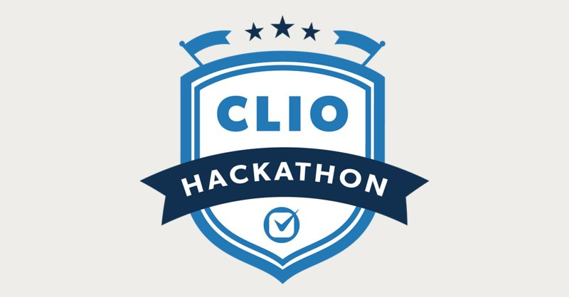

Abstract
Up until 8 months ago my experience with the Legal industry was limited to 6 seasons of Breaking Bad`s spin off show, Better Call Saul and one season of Suits. Other than throwing around legal jargon here and there, the shows portrayed one important aspect of the legal industry that is true to real life: papers, stacks of papers, clustered filing rooms, mail rooms, and fax machines always in use.
Law firms to this day aren`t embracing the advantages that come with technology and are scared to open themselves up to that world, especially when they can stick to what they`ve known their entire careers. My experience at Clio gave me insight into a rapidly changing industry and how a company can successfully adapt to that, while maintaining a strong organizational structure. While observing this as a Clion, I was able to polish my web development skills as well!
About The Employer
Clio has been set on Transforming the Legal Experience for All for over a decade now. They believe that the future of legal is cloud based and client centered. Clio has the goal of becoming a 100-year enduring company and Clio by Design is the culture guide that drives them towards this goal. They make it easier for legal clients to collaborate with their lawyers and understand the legal system, while creating new solutions for lawyers to serve their clients. Clio has a new valuation of $1.6B USD marking them as the first legal practice management unicorn globally and now has over 1000 employees (Clions)!
I learned all of this during my 3-month onboarding period and especially in my 1-week onboarding camp. From which, the most important takeaway was Clio`s 8 values (values graphics)
Clio`s culture is what impressed me the most, ever since my culture screening interview with them, which was an entirely new concept to me. They pride themselves on creating purpose-driven work while staying human and high performing. They foster an inclusive, belonging, and equitable environment and give all feedback with positive intent.
Office In
Toronto, Canada

Office In
Dublin, Ireland
Based In
Burnaby, Canada
Job Description
Joining Clio while knowing about the hard working and high performing environment was daunting at first. I was joining a new team, that was getting started on a brand-new project, in a brand-new tech stack. The project was going to take all 8 months of my work term to complete with the team and is soon to be revealed in the company’s up coming convention, ClioCon 2023. It is expected to generate much of Clio’s revenue next year and will result in many leads for the company. It lives in Clio’s Manage service, which is cloud-based legal practice management software that makes running firms, cases, and collaborating with clients from one place possible.
The team was large and consisted of East/West coast members, having some members on rotation with other teams as and when needed. I was immediately welcomed and mentored by everyone, especially Albert, who was my onboarding buddy for the first month and I could go to for any questions/concerns. The new project was refreshing, as there was no tech debt, and I got to participate in some of the planning, testing, and improving that comes with a large project on a clean slate. I got to see the architecture get built and learned all that goes into a project of this scale from start to finish. This is something I know I will take with me, even if I don’t pursue a career in software development, I learned bits of project management, customer research, design and much more.

The new tech stack was an exciting opportunity to learn but produced its own challenges. While already new to Ruby on Rails (ruby coding language and rails framework) and in the process of learning that, I also had to pick up the Hotwire framework, Tailwind CSS, and AlpineJS. This stack was yet to be used across Manage, and the team was unfamiliar with it. This meant that I had no previous organizational references to code structure and some of my questions couldn’t be answered by the team, because they hadn’t solved the same issue yet. I worked through this with a lot of trial and error, many questions asked, and using our first Sprints/Milestone as the code basis for the rest of the term.
Overtime, I became accustomed to the team norms and was a fully functioning member, participating in code reviews, spinning up beta branches for testing, quality analyses (which were all done internally), writing pull requests and guiding them through the approval process until finally merging to master, monitoring production after a merge, and all our meetings (sprint planning, standups, retro’s, all hands, town halls). The biggest difference I found between my first and final 4 months was my adaptation to the work from home format, which in my opinion, Clio has mastered. Regular face to face meetings keep you closely connected to the team. There was a slack channel with the right people for your every need (it-help, frontend-infrastructure) and fun channels to connect on mutual interests with Clions world-wide (dogs, cats, climbing, formula-1 were some of my favourites).
I had regular meetings with my manager who would check in, help with problems, provide feedback and help me develop my career plan. We would do bi-weekly team hangouts, were encouraged to have regular 1-1s with team members where we could connect without the pressure to discuss work (but had the option to do so). We were also given the opportunity to experiment in 3, 2-day hackathons occurring during my employment period. One of which I got to make a Gameboy game in, and in all I learned something new and got to work outside of my day-to-day format. I was setup for monthly meetings with all the other co-ops to hangout or work on some skills together. At the end of the term I even got to give a presentation to R&D and all co-ops highlighting my experience over the term. Above all the code I wrote and the project we completed, this was one of my favourite impacts at Clio, because I was able to share my knowledge and give advice to co-ops just starting out!
Learning Goals
1. Learn how to write Rspec and capybara e2e tests to test the ins and outs of my code.
Rspec tests were simpler to write and depended mostly on the setup, having the right values you need defined before getting into the “it” block of my code. My biggest mistakes and learning opportunities were with the readability of the tests themselves. I learned that once done correctly, when a test fails, the blocks with the proper “context”, “describe”, “before” and “it” usage with the right wording result in a human readable error message taking you exactly to the spot in the test code that failed and ideally knowing why it failed.
2. Actively participate in code reviews and provide valuable feedback to my team as well as perform QA for their pull requests.
Early into my term I was performing QA’s for the team, and with well laid out test plans, I was able to carry out the QA, understand what actions I was performing, why I was performing them and was able to learn from them. At times, even if I didn’t review the code for a PR, if I was confused as to how something was working on the beta branch, I would look into the code and understand from there. I then started learning more and more by reviewing other’s code and asking questions for my own understanding about the sections that were unfamiliar, this is where I picked up many patterns and best practices. Towards the end of the term I was able to give feedback on certain PR’s, although I would have liked to catch even more issues, or provide more suggestions with more time.
3. Learn the ruby language and the rails framework well enough that I can complete tickets with minimal syntactical help from others.
At the start of my work term, I was getting long pairing sessions with my onboarding buddy, with the other new hire, and anyone who was free to help. Over time and through studying the code in reviews and looking at PR’s, I picked up on patterns, found out what resources to exhaust and in what order to find what I need myself. I would watch what others do during pairing sessions and start to pick up on their problem-solving techniques. Sometimes this meant knowing when to talk to FEI for an opinion on how to use a design component or searching the codebase for use of a function and adapting that to your specific parameters. I was able to complete my own tickets for the second half of the work term, although some of the larger tasks did still find me asking for more assistance, which I have no shame in.
4. Manage my time efficiently to maximize my learning during my time at Clio.
Time management has always been one of my bigger struggles, always failing to complete tests within a restricted time. This was something I slowly developed at Clio. There was a time I took on a larger task of writing a validation service, and ended up blocking the team because the ticket was larger than anticipated and I didn’t get the help I needed early enough. Later on, I was working on tasks off the critical path, where I could spend more time learning while still completing important tickets to the project. In this time, I started setting more deadlines or checkpoints within a ticket. Sometimes these were personal, and sometimes I’d share with the team or mention it in standup to have that accountability. I also learned more about what motivates me personally, and how to complete the bulk of my work in the peak of my motivation and dedicate remaining time to learning/research. I’m not yet where I hope to be with this goal, but I certainly developed myself and know what helps/hinders me. I hope to continue this development when I start my professional career post-grad and as I return to school.
5. Develop my skills in writing E2E specs, understand the structure of E2e more and why we decide to structure it certain ways.
E2E tests were a different matter, where many transient errors would slip through and only cause problems occasionally. To prevent this, we started running our e2e scenarios 100 times through to have full confidence it will pass. Having too many scenarios or repeating tests would slow everybody down (CI runs all automated tests when building before merging a PR to master). Not only did I learn how to write readable test that cover all cases, but I also learned how to write them efficiently. In a later milestone, we started pulling out chunks of code into helper e2e functions for common actions such as navigating to a certain tab, this thoroughly cleaned our e2e. I also did my own dive into what changes were made by our team when the first large refactor took place on the e2e. I learned from the team the notion of YAGNI (you aren’t gonna need it) and this was a large part of the refactor. Pieces of code were misplaced, testing items that should be tested, but not in the correct testing workflow. I’d like to have the opportunity to refactor some e2e myself in the future and didn’t realize how much I would like testing in general until my experience at Clio. There is something satisfying about writing code and having confidence in the fact that it covers all the happy and unhappy paths, with little chance of failure, through rigorous testing.
Skills
Ruby/Rails
QA
E2E Specs
Code Reviews
Acknowledgements
I want to firstly thank all that were on my team at any point during my 8 months, I found an instant connection with each of you, and you all nurtured me and contributed to my success at Clio.
I want to especially thank Albert my onboarding buddy, who answered everything for me and provided all additional resources I needed in that onboarding period and was just as helpful for the remainder of my time at Clio.
I want to thank my manager Eric who guided me in the Clio ways, guided the team through difficulty, was empathetic and truly wanted what was best for me, and the best out of me. He taught me soft skills and interpersonal skills.
I want to thank Robin who took over as my personal manager for the second half of my work term. I learned so much technically from him, he helped me in the areas I was struggling in and gave me valuable career development advice that I can take with me to any job.
I want to give a final thanks to Eric and Christie who did a great job setting up co-op events and to all Clions for being the most welcoming and caring community.
Conclusion
There are not enough thanks I can give for my experience at Clio. To see how much a company is willing to put into their employees, to see so many employees happy and excited to work and driven to work towards more is heartwarming, and the feeling rubs off on you.
This is my final work term report, and the most excited I have been writing one, I could go on and on about my experiences in what seems like a not long enough 8 months. If you would like to know more, I encourage you to reach out to me and ask away, I’d be happy to go into more depth on what I discussed here or share even more.
As I filled out the exit survey, and had my final team hangout meeting with everyone, the only word that could describe my sentiment at that time, would be fulfilled. I’m leaving Clio with an optimism towards my career path and hoping to find more companies that can match the expectation that Clio has set.